-
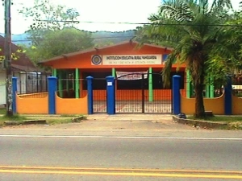
Sede Principal
Ubicada en la vereda Vanguardia del corregimiento número 5, localizada al norte del municipio de Villavicencio en el departamento del Meta, Colombia.
La vereda Vanguardia cuenta con una unica institución educativa de carácter oficial, conformada por 10 sedes, antes sede Escuela Rural Vanguardia, sede centro administrativo, en esta escuela solo se ofrecia educación Básica primaria, durante los últimos 10 años y con la visión de la rectora Mg Martha Vidales de Rojas, la institución a crecido enormemente ofreciendo los niveles de educación primaria, basica secundaria y media ,además educación de adultos. Actualmente Institución Educativa Rural Vanguardia.
Con un modelo pedagógico cognitivo social, su enfoque pedagógico aprender a aprender, una metodología de escuela nueva.
Ha obtenido grandes reconocimientos entre ellos:
Mejor rectora 2010 Mg. Martha Vidales de Rojas por eficiencia, calidad y cobertura. otorgado por la Secretaría de Educación Municipal. -
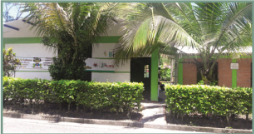
Sede La Argentina
Escuela Rural Nueva La Argentina es una sede del establecimiento Institucion Educativa Rural Vanguardia identificada con el número 250001004481 ubicada en Villavicencio, Meta zona Rural con dirección Vda La Argentina y número de contacto 6638960. Escuela Rural Nueva La Argentina cuenta con los niveles Preescolar,Básica Primaria,Primera Infancia y grados -3,0,1,2,3,4,5.
-
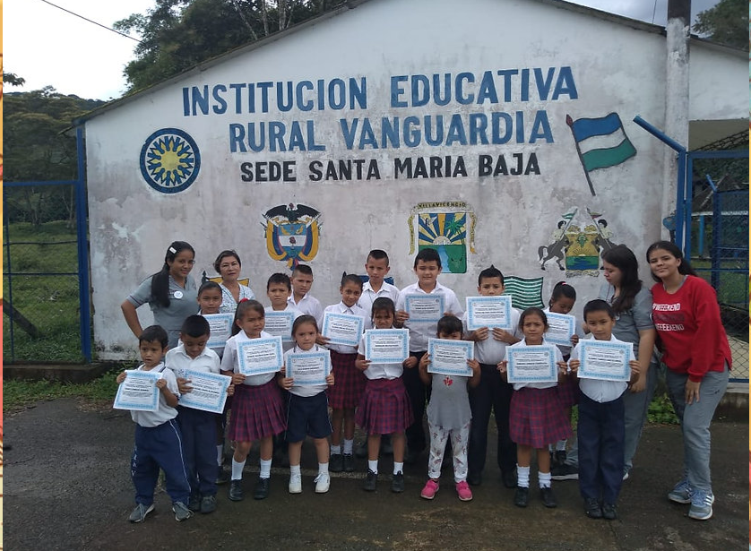
Sede Santa Maria Baja
C.E.R. Santa Maria Baja es una sede del establecimiento Institucion Educativa Rural Vanguardia identificada con el número 250001007498 ubicada en Villavicencio, Meta zona Rural con dirección Vda Santa Maria Baja y número de contacto . C.E.R. Santa Maria Baja cuenta con los niveles Preescolar,Básica Primaria,Primera Infancia y grados -3,0,1,2,3,4,5.
https://mariabajaensv.wixsite.com/mariabajaensv
A continuacion el link a la pagina de esta sede: -
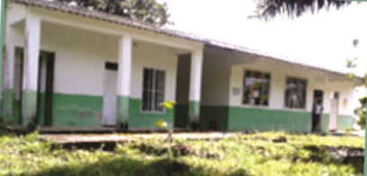
Sede San Pedro Claver
-
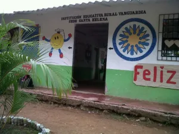
Sede Santa Helena
-
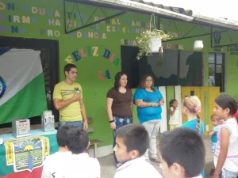
Sede Divina Providencia
-
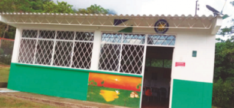
Sede Louders
-
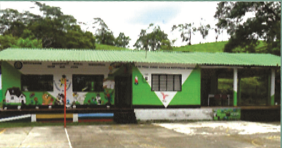
San José
-
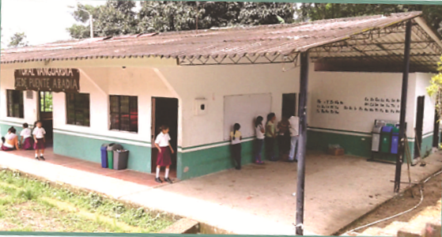
Sede Puente Abadía
-
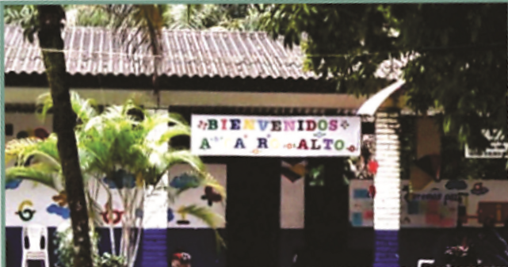
Sede Cairo Alto
-
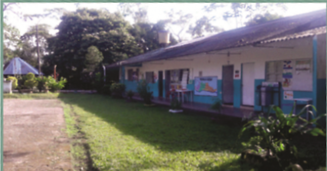
Sede Cairo Bajo
-
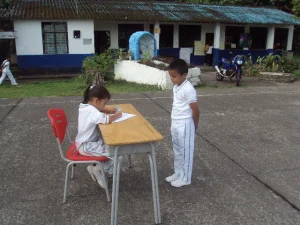
Sede La Poyata
La vereda la Poyata se encuentra ubicada al noroeste del municipio de Villavicencio a una altura de 467 mts, sobre el nivel del mar, con una temperatura promedio de 27°.
Mediante resolución N° 0470 de 2004 fusión con la Institucion Educativa Rural Vanguardia, ofrece educación preescolar, primaria y educación de adultos, con 4 docentes en dos jornadas,dando cobertura y calidad. -
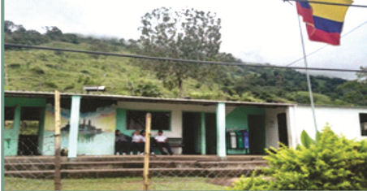
Sede Quebrada La Honda
-
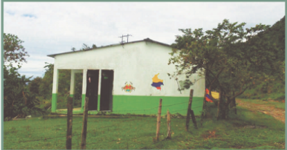
Sede Santa Maria Alta
-
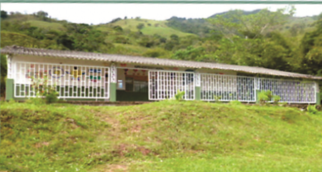
Sede San Cristobal